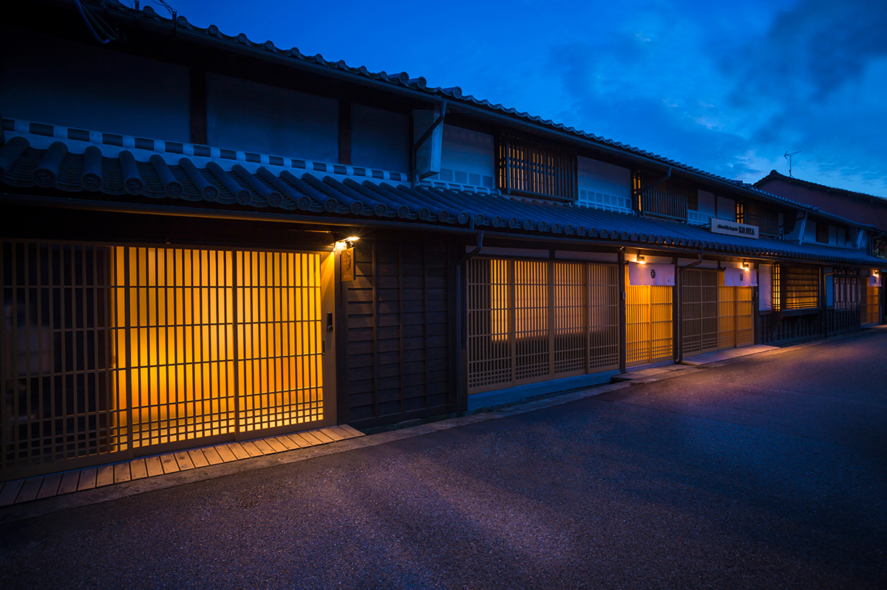
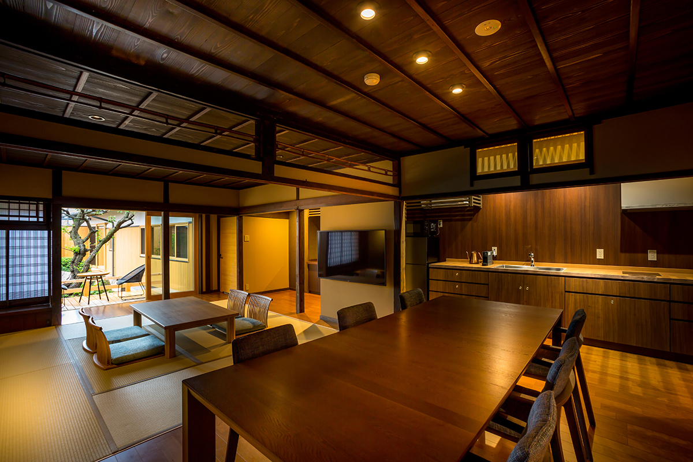

Префектура Окаяма · Цуяма · отель
«Кодзия» в Цуяме: ночь в доме сакевара эпохи Эдо

В Цуяме, на старой дороге Идзумо, дома с длинными навесами стоят так же, как двести лет назад. Один из них, бывший дом сакеварни, переделали в гостиницу, где можно жить целым домом.
Место
Квартал Дзётё
В квартале Дзётё, вдоль старой дороги Идзумо, сохранились дома эпохи Эдо с длинными навесами над тротуаром. Здесь, на улице Хаясидамати, открылась небольшая гостиница «Кодзия». Это первый для группы «Хотэру Нюавадзи» дом в стиле матия.
Основой стало здание бывшей сакеварни семьи Канда. Дом и сама сакеварня признаны «важным культурным достоянием» Японии, и их не стали перестраивать, а бережно приспособили под гостиницу.
История
Сакэ с 1758 года
Сакеварня семьи Канда основана в 1758 году. В те годы здесь варили сакэ под именем «Кандая». В краю Мимасака было много хорошего риса, холодная зима и чистая подземная вода, поэтому сакэварение шло успешно. К концу эпохи Эдо семья стала придворным поставщиком сакэ для клана Цуяма и одной из самых крупных лавок города под маркой «Сёхаку».
Номера
Матия с кухней
Из четырёх соединённых домов сделали три гостевых дома и один лаунж. Дом A занимает около 220 квадратных метров на двух этажах, рассчитан на восемь гостей и окружён садом и террасой. Внутри есть кухня, поэтому еду можно готовить самим. В одном из четырёх домов открыт общий лаунж с видом на внутренний двор, где гостям оставляют напитки.

Прогуляться по кварталу тоже стоит: рядом есть кафе, рестораны и небольшие галереи. Долгие навесы над улицей и сегодня создают тот же уют, что и сто лет назад.
Гостиница «Кодзия»
- Адрес
- префектура Окаяма, Цуяма, Хаясидамати, 68
- Телефон
- +81 868-24-2111
- Цены
- в 2024 году от 24 310 иен за ночь с завтраком (с налогом и сервисным сбором); актуальные смотрите на сайте